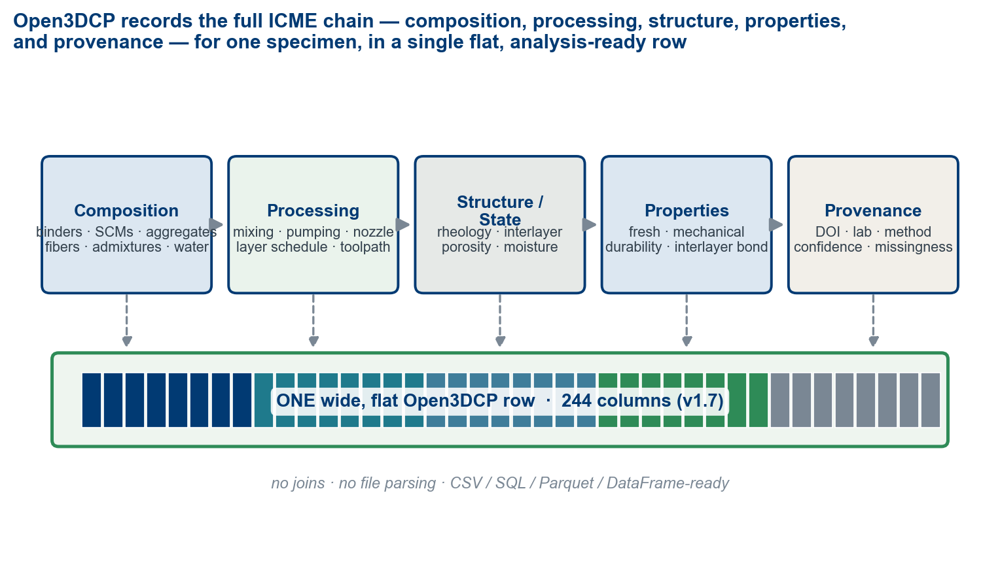
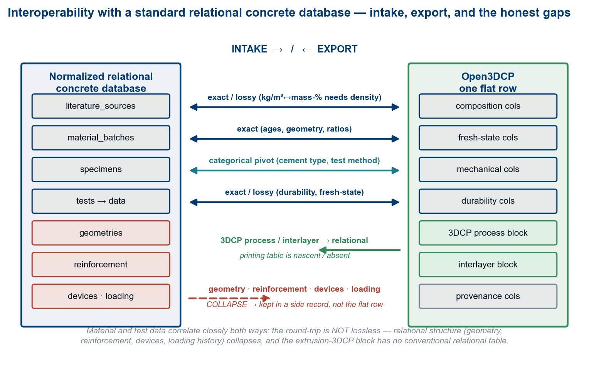

Open3DCP: A Public Data Schema for 3D Concrete Printing
Design, rationale, and the measurement gaps of an analysis-ready record for extrusion 3D concrete printing
Sunnyday Technologies · ORCID 0009-0002-1897-384X
Abstract
Three-dimensional concrete printing (3DCP) is a coupled
material–process problem: a printable cementitious system is defined by
composition, rheology, equipment, toolpath, environmental exposure,
curing, specimen extraction, test orientation, and measured performance.
The literature reports many of these facts, but distributes them across
prose, tables, figures, and supplementary files using inconsistent names
and unit bases — which makes cross-study comparison, meta-analysis, and
machine-learning workflows harder than the underlying measurements
require. Open3DCP is an open, flat schema for recording extrusion-based
3DCP mix-design and test records. Version 1.7.5 defines 248
columns in its primary record, spanning composition, fibers,
admixtures, fresh-state rheology, 3DCP process parameters, hardened
mechanical and durability properties, interlayer bond, specimen/test
metadata, environmental conditions, and provenance. Quantities are
recorded on a dual basis that keeps kg/m³ — the field standard —
first-class: the constituent columns store the self-normalizing
mass-percent projection, and bridge columns preserve the source’s kg/m³
exactly, so either basis is recoverable without a density assumption;
missingness is represented as NULL, with 0
reserved for explicit source-reported zero. Open3DCP is a reporting
layer, not a test method or a substitute for ASTM, EN, ACI, ICC,
ISO, or RILEM standards: it lets 3DCP records be assembled into
interoperable datasets for scientific review, Integrated Computational
Materials Engineering (ICME)–style process–structure–property analysis,
digital-twin reconstruction, and downstream analysis where sufficient
validated data exist. We give the design rationale for each major
decision and demonstrate ingestion on five
openly-licensed public datasets — a cast-concrete benchmark, a corporate
carbon-aware set, a ~30-laboratory 3DCP mechanical database, an
extrusion-3DCP printability set, and a project-layer building catalogue
— into one schema, including a cross-study print-anisotropy result. The
point Open3DCP makes is one of characterization, not
prediction: each source records a different slice of the
material and process — composition, fresh-state rheology, hardened
performance, embodied carbon, print orientation, or the as-built project
— and the schema holds their union in one shape, so that what any one
study leaves unmeasured is made explicit rather than lost. We also
identify a taxonomy of features that are physically important but cannot
yet be measured reliably — an agenda for instrumentation.
Contributions
- An open, 3DCP-native flat data schema (v1.7.5, 248 columns) with first-class columns for print process parameters, fresh-state rheology, and interlayer-bond properties — the features that distinguish printed concrete from cast.
- A design rationale for each consequential choice:
flat table over graph, dual-basis recording that keeps kg/m³
first-class, fineness-modulus over maximum aggregate size, and
NULL≠0. - A measurement-gap taxonomy — real-time process monitoring, in-situ material state, and post-process characterization gaps — framed as a research agenda for instrumentation.
- A worked demonstration ingesting five openly-licensed public datasets — a cast-concrete benchmark, a corporate carbon-aware set, a ~30-laboratory 3DCP mechanical database, an extrusion-3DCP printability set, and a project-layer building catalogue — into one schema, two of them carrying a real automated fidelity score, and yielding a cross-study print-anisotropy result that the schema’s orientation field makes expressible (§6).
1. Introduction
3D concrete printing has moved from laboratory demonstrations toward construction-scale experimentation; printed residential structures, bridges, and architectural elements have been produced in many countries worldwide using systems ranging from gantry extruders to six-axis robotic arms [1, 2, 3]. The technical literature now spans printable mortars, alkali-activated binders, fiber-reinforced systems, recycled aggregates, interlayer bond, anisotropic strength, rheology, buildability, and durability. The public record is large enough to support comparative analysis, but not yet consistently shaped enough to make that analysis straightforward.
The central problem is not that researchers fail to report data — many papers report substantial detail — but that the detail is not represented in a common structure. A material may appear as “GGBFS,” “slag,” “ground granulated blast-furnace slag,” or a supplier name; a dosage may be reported in kg/m³, percent of binder, or percent of total mass; a compressive strength may refer to a cast cube, a printed prism, a cored specimen, or a coupon loaded across the layer interface. These distinctions matter scientifically, yet they are often not preserved in a machine-readable way. The consequence is direct: datasets from different groups cannot be combined without extensive manual harmonization, so the field cannot easily build the large, multi-source corpora that modern analysis needs. The most widely used concrete dataset for machine learning — Yeh’s UCI Concrete Compressive Strength set [4] — captures only composition and age, with no process, rheology, or orientation fields, and predates 3DCP entirely (§3).
What makes 3DCP fundamentally different from cast concrete can be stated in four points:
- Process–property coupling. The same mix, printed at different speeds, layer heights, and time gaps, can produce substantially different mechanical properties. Process parameters are design variables, not noise.
- Anisotropy. Printed concrete is direction-dependent; specimens tested across the layer interface can be 20–40 % weaker than those tested parallel to the layers [5, 6]. A strength value without an orientation is ambiguous.
- Rheological demands. The mix must be simultaneously pumpable and buildable; yield stress, thixotropy, and open time are critical performance parameters absent from conventional concrete datasets [7].
- Interlayer bond. The weakest link in a printed element is usually the interface between layers, where bond depends on surface moisture, time gap, ambient conditions, and degree of hydration at deposition [8, 9].
These four properties are what a 3DCP record has to capture if printed-concrete results are to be compared across studies at all: a strength without a process, a rheology, and an orientation is not a comparable measurement. Open3DCP exists to record that fuller experiment, not to model it.
2. Scope and non-scope
Open3DCP is a schema specification: it defines how to record data; it does not provide the data. It is scoped to extrusion-based (material-extrusion / FDM-style) 3D concrete printing — the process whose pump, nozzle, layer schedule, and toolpath the schema captures. Particle-bed / binder-jetting, spray, and slip-form methods are out of scope: they have different process variables and would need their own process block.
On materials chemistry, Open3DCP covers hydraulic cementitious systems — Portland and blended cements, calcium-aluminate and calcium-sulfoaluminate cements, and high-calcium alkali-activated slag, whose C-(A-)S-H binding gel is chemically continuous with Portland hydrates. Low-calcium fly-ash geopolymers (whose N-A-S-H gel is a distinct binder chemistry) are out of scope; the schema’s activator columns exist to record the high-calcium alkali-activated systems that are in scope, not to characterize geopolymers.
Open3DCP is:
- A public column vocabulary for 3DCP mix-design and test records.
- A dual-basis, SI-unit reporting convention: mass-percent stored, the source’s kg/m³ (the field standard) preserved exactly via bridge columns — either basis recoverable without assumption.
- A standards-aligned cross-reference layer for common material classes and test methods.
- A flat structure for CSV, SQL, Parquet, dataframe, and repository-deposit workflows.
- A citable artifact with a DOI and Apache-2.0 licensing.
Open3DCP is not:
- A dataset or benchmark, a database service, or an API.
- A structural-design method or a code-compliance path.
- A replacement for ASTM, EN, ACI, ICC, RILEM, ISO, or jurisdiction-specific requirements.
- Evidence that any particular mix is safe, durable, printable, or construction-ready.
The schema can record data used in qualification or research workflows, but any construction use still requires appropriate laboratory validation, professional engineering review, and approval under the governing jurisdiction.
4. Why 3DCP needs a 3DCP-native record
Conventional concrete datasets focus on composition, age, and one or more hardened properties — useful for cast concrete, where placement and compaction are treated as standardized. 3DCP makes that assumption unsafe: the manufacturing process is part of the material definition. At minimum, a 3DCP record must distinguish what was weighed into the mix; how it was prepared and modified over time; how it was pumped and extruded; what geometry was deposited; how much time elapsed between adjacent layers; the environmental conditions during deposition; how the specimen was cured and extracted; the loading direction relative to the layer interface; the test method or local protocol; and whether each value was measured, calculated, estimated, or merely reported. Without these attributes, two identical-looking compressive strengths may describe physically different experiments — a cast cube and a printed coupon loaded across interlayers should not collapse into one data point merely because both report MPa.
5. Schema design principles
Open3DCP is governed by a small set of principles, each motivated by the practical requirements of analysis and the lessons of data standardization in adjacent fields.
5.1 Flat schema. Every stored feature is a named column in a single table — no JSON nesting, no graph structure, no join required for basic analysis. This prioritizes adoption by the researchers, curators, and ML practitioners who overwhelmingly work with tabular data (pandas, CSV, SQL) over the representational elegance of graph models such as GEMD [59], which capture provenance chains and measurement hierarchies but add friction for the common “load a table and train a model” use case. A graph view can be constructed from the flat schema for the structure it captures; conversely, the flat row deliberately omits the full relational/provenance tree (§9), so flat→graph reconstruction is faithful only for the subset the row holds — the two are complementary, not equivalent.
5.2 Dual basis: mass-percent stored, kg/m³
preserved. To be precise about what sits where: the constituent
columns store mass-percent of total wet mix — the
self-normalizing projection (Σ ≈ 100 %) that pools cleanly across
datasets — while the source’s kg/m³ (the convention the
concrete industry and field actually use) is preserved exactly
and is first-class, never approximated. Three columns make the
two interconvertible without assumption: original_basis
records what the source reported (kg_m3 |
mass_pct | volume | lb_yd3), and
total_batched_mass_kg_m3 and
total_binder_kg_m3 carry the batched-mass and binder totals
needed to convert exactly in either direction. This resolves a real
tension: kg/m³ is what practitioners report and need, but normally
requires a density assumption for cross-dataset comparison when density
is unreported; mass-percent is self-normalizing and ideal for pooled
analysis, but is foreign to field practice. Storing the projection plus
the lossless bridge serves both without discarding information. (Schema
versions ≤ v1.5 carried mass-percent only, with no recoverable kg/m³;
v1.7 added the bridge columns that make kg/m³ exact. Admixtures are
recorded on a solids basis where the source reports the
solids fraction; where it does not — common in public datasets — the
as-delivered mass is stored exactly and the row’s
admixture_basis flag records as_delivered
(v1.7.5), so nothing is assumed and solids remain derivable when a
fraction is known. w_b_ratio counts only the water column,
not admixture carrier water. The same preserve-don’t-presume principle
gives unclassified constituents exact homes:
cement_unspecified, fine_agg_unspecified, and
coarse_agg_unspecified store the mass when the source
states no type, fineness modulus, or size — the classification stays
NULL instead of being defaulted.)
5.3 NULL is not zero. Open3DCP
distinguishes missingness from absence. NULL marks a value
that is unknown, not reported, not applicable, not measured, or not
recoverable without an assumption; 0 is reserved for an
explicit source-reported zero or absence. steel_fiber = 0
is appropriate when a paper states no steel fiber was used;
steel_fiber = NULL when the paper is simply silent. The
distinction is critical for statistics and model training, because false
zeros bias means, correlations, feature importance, and learned absence
effects.
5.4 Standards alignment without standards substitution. Column names and descriptions reference established standards where they define material classes or test methods — ASTM C150 (cement types), C618 (fly-ash classes), C989 (slag), C1240 (silica fume), C33 (aggregate grading by fineness modulus), C39 and EN 12390-3 (compressive testing), and RILEM TC 304-ADC orientation terminology. These are interoperability hooks, not endorsement or certification: a column can record that a result was produced under a given method, but the schema cannot verify the method was performed correctly.
5.5 Provenance by design and multi-age support.
Every record carries a DOI or source citation, a measurement-confidence
flag (measured / calculated / estimated / reported), and a laboratory
identifier, so downstream users can filter by data quality and trace
results to their source. A companion strength_measurements
table stores results at multiple ages (one hour through 365 days) linked
by formulation, supporting strength-development analysis — early-age
strength governs buildability while 28-day strength governs structural
adequacy, and most datasets report only the latter.
5.6 Documented trade-offs. Two further choices are deliberate departures from convention. Fineness modulus over maximum aggregate size: because 3DCP uses only fine aggregate (constrained by pump and nozzle, generally below 4 mm), Open3DCP classifies sand by fineness modulus (FM — the summed cumulative mass-percent retained on the standard sieve series, divided by 100; a single index of overall fineness), which is more discriminating than maximum particle size for the fine aggregate (well below the 4.75 mm sand boundary, often under ~4 mm) that printing uses — two sands of equal maximum size can have very different gradations and packing. Trade sand classes (mason / fine / concrete / coarse), mapped onto ASTM C33 grading, are one realization; EN/ISO grading maps onto the same field. SCM reactivity factors excluded: the schema stores what was weighed — the mass of each SCM — and leaves reactivity estimation to downstream feature engineering, because reactivity factors are modeling decisions, not raw data.
6. What v1.7.5 records
Open3DCP v1.7.5 defines 248 columns in its primary
mix_designs record (companion tables —
strength_measurements, sources,
test_methods, curing_regimes,
material_aliases — add linked rows and are not in this
count). Figure 1 places the columns in the ICME chain; Figure 2
inventories them under a
Composition–Processing–Conditions–Properties–Provenance
(CPPC) view — a reporting-oriented refinement of the ICME
process–structure–property chain that adds explicit Conditions and
Provenance legs, not a competing standard. The canonical
column-by-column specification is the repository’s
Open3DCP_SCHEMA.md and sql/create_tables.sql;
this section summarizes the categories.
The 248 is best read as a vocabulary, not a per-record
dimensionality. It enumerates every reportable field — each cement type,
each aggregate size, each fiber, each durability test is its own column
— so a typical record leaves most columns NULL (the schema
is sparse by design). Only four columns are computed from others
(w_c_ratio, w_b_ratio, a_b_ratio,
fiber_aspect_ratio); the rest are independent recorded
fields, with five carrying measurement uncertainty, five referencing
external files, and the remainder provenance/identity metadata (Figure
4). About three in four columns describe material and performance
properties shared with conventional cast concrete; the printing-process
and interlayer columns are the additive, 3DCP-specific part (Figure
3).

![The 248 columns of Open3DCP v1.7.5 mapped to the CPPC framework. Counts are parsed from sql/create_tables.sql, the schema’s source of truth. Composition (95): binders, SCMs, activators, aggregates, fibers, admixtures, pigments, water, ratios, aggregate conditioning, basis and unspecified-constituent columns. Properties (86): fresh-state, mechanical, interlayer bond, durability, thermal, microstructure. Processing (27): 3DCP process parameters, pumping, mixing. Conditions (24): test conditions / specimen, environment, exposure class. Provenance (16): identity / versioning, source DOI, quality flags.](figures/fig2_column_inventory.png)
![What is specific to 3D concrete printing, and what it shares with conventional concrete. Of the 248 columns, ~187 describe composition and performance properties shared with cast concrete (and therefore crosswalk to a relational concrete database); ~39 are specific to extrusion 3DCP (printing process, pumping, interlayer bond, printing-state rheology) with no conventional-concrete counterpart; the remaining ~22 are provenance. (This is a different cut of the same 248 than the CPPC inventory in Figure 2 — by origin rather than reporting role — and also sums to 248.) The amber annex lists extrusion-process inputs identified but not yet captured — a future-work agenda.](figures/fig3_data_classes.png)
![Schema growth has stabilized (top): v1.5 → v1.7.5 is a net +12 to 244 and then +4 to 248, and the only non-additive change across the tagged releases was the v1.6.5 SCM per-grade consolidation; the figure carries the per-release detail. Composition of the 248 (bottom): only four columns are derived from others, so the count is a sparse measured vocabulary — the union of every reportable field, most NULL in any record — not 248 independent measurements. Only the git-tagged releases (v1.5–v1.7.5) carry exact counts; v1.0 is the changelog’s stated first-release figure (~175). The 248 are data columns, excluding the SERIAL primary key.](figures/fig4_schema_growth.png)
Composition. Portland and blended cements, calcium-aluminate and calcium-sulfoaluminate cements, fly ash (generic, Class F, Class C as separate columns per ASTM C618 oxide-sum classification), slag, silica fume, metakaolin, limestone, pumice, bottom ash, rice-husk ash, alkali activators, nanoscale modifiers, mineral powders, recycled sand, pigments, aggregates, fibers, admixtures, clay rheology modifiers, water, and derived ratios. The schema preserves chemically meaningful distinctions rather than collapsing all cementitious material into a single “binder” field, because fly-ash class, slag, silica fume, limestone, and metakaolin are not interchangeable in hydration, packing, rheology, or long-term performance.
Fibers. Eight core families —
steel_fiber, pp_fiber, pva_fiber,
glass_fiber, basalt_fiber,
carbon_fiber, nylon_fiber,
aramid_fiber — plus cellulose_fiber for
natural-fiber compatibility (relevant to emerging 3DCP
wall-qualification frameworks such as ICC 1150 [47]), with geometry
captured separately (fiber_length_mm,
fiber_diameter_mm, fiber_aspect_ratio,
fiber_tensile_strength_mpa). Aspect ratio is the single
strongest predictor of fiber contribution to post-crack toughness and is
rarely derivable from papers that report only type and dosage.
Fresh-state and rheology. Slump, spread, J-ring, V-funnel, L-box, setting times, air content, fresh unit weight, bleeding, yield stress (static and dynamic), plastic viscosity, thixotropy / structuration rate, open time, and green strength. Printability is not a single property: pumpability, extrudability, shape stability, and open time can move in different directions as water, superplasticizer, VMA, accelerator, grading, and ambient conditions change.
Process parameters. Print speed, layer height and width, layer time gap, nozzle diameter / shape / area, filament width, extrusion rate, number of layers, path length, infill pattern, contour count, print direction, and pumping/mixing/environmental conditions — the processing leg of the ICME chain, absent from prior concrete datasets. The process columns and their typical downstream outcomes are specified in the repository.
Specimen and test context. Specimen preparation, geometry, dimensions, extraction method, curing conditions, test age, test method, number of specimens averaged, and test orientation — especially important because printed concrete is anisotropic. Orientation is a controlled vocabulary (Table 1).
| Code | Axis | Description | Typical strength* |
|---|---|---|---|
X |
Longitudinal | Parallel to extrusion direction (along the print path) | Highest |
Y |
Transverse | Perpendicular, within layer plane | Moderate |
Z |
Interlayer | Perpendicular to layer interfaces (build axis) | Lowest |
XY_45 |
In-plane | 45° diagonal in layer plane | X–Y intermediate |
XZ_45 |
Cross-layer | 45° diagonal across layers | X–Z intermediate |
CAST |
Isotropic | Moulded reference specimen | Baseline |
* Indicative ordering for axial (compressive)
loading, and mix-dependent. In flexure the
ordering can invert: loading along the print path (X) bends
the interlayer planes in tension, so X is typically the
weakest flexural orientation — exactly what the worked
demonstration measures later in this section.
Table: Test-orientation controlled vocabulary. Strength ordering is typical; specific values depend on mix design and process parameters [5, 6].
Hardened, durability, and interlayer. Compressive, tensile, splitting tensile, flexural, modulus, bond, fracture energy, toughness, impact, fatigue, density, and Poisson’s ratio; a durability suite covering chloride transport, carbonation, shrinkage, creep, freeze–thaw, sulfate and ASR expansion, permeability, absorption, sorptivity, scaling, corrosion indicators, thermal properties, and fire resistance; and interlayer columns for bond, shear, void-area fraction, deposited air content, surface roughness, surface moisture state, and surface treatment. The schema does not assert that every dataset measures all of these; it provides stable homes when the measurements exist.
Provenance, basis, and uncertainty. Beyond DOI,
citation, confidence, lab, and quality flags, v1.7 added per-measurement
uncertainty columns (e.g. compressive_strength_stddev_mpa),
raw-data references that keep large payloads external
(raw_data_doi, stress_strain_file,
rheology_curve_file, microstructure_image,
raw_data_file), the basis columns of §5.2, a
material_class classification, a batch timeline
(batch_label, date_of_casting), and
aggregate-conditioning columns (aggregate_moisture_state,
aggregate_absorption_pct,
aggregate_moisture_content_pct,
aggregate_prewetted) that make effective mix water
recoverable when aggregates are batched off the SSD reference.
Quantifying the cost of flattening. Projecting a heterogeneous or relational source onto one flat row can lose information. Rather than hide that, the fidelity of the mapping can be scored against the source and reported — a proposed, not-yet-calibrated convention (§10) — so the cost of each conversion is recorded rather than hidden. A machine-readable crosswalk to a normalized relational concrete database, and a specification of the process-parameter columns that have no conventional relational counterpart, are included in the repository.
Worked demonstration: five public datasets in one
schema. To show the schema works on real data — not only by
design — we ingested five openly-licensed public datasets into Open3DCP,
chosen so that each lights up a different slice of the record
(Figure 5, left). Two are flat kg/m³ tables that the
open3dcp-ingest tool converts and scores automatically:
- UCI/Yeh (1998) [4], a cast-concrete
benchmark, maps onto composition and hardened strength and ingests at
100/100 (A) (126 populated cells across its 9 source
fields) with zero assumptions: every constituent mass
is stored exactly, and the four details the source never records — the
cement type, the fine- and coarse-aggregate gradations, and the
superplasticizer solids fraction — are stored generically (the
*_unspecifiedcolumns and theadmixture_basisflag) with the classification left NULL rather than guessed. The fidelity report discloses those 47 generically-recorded cells alongside the score. It remains the normal-strength reference point. - Meta SustainableConcrete [49], an openly-licensed
(MIT) carbon-aware set from Meta with the University of Illinois and
Amrize, ingests at 100/100 (A) on the same terms and
additionally populates embodied carbon (per-mix global
warming potential, GWP) and the measurement-uncertainty columns. It
makes a cross-source trade-off legible in one schema: a plain-Portland
concrete (Mix_84) at ~521 kg CO2/m³ for ~65 MPa beside a
low-clinker ternary (Mix_88) at ~204 kg CO2/m³ for ~110 MPa —
a low-clinker binder reaching high strength at a fraction of the
embodied carbon. (The strength gap also reflects a lower water/binder
ratio — 0.25 vs 0.40; a second mix at the same ~204 kg
CO2/m³ reaches ~61 MPa — one illustrative pair, not a
carbon-drives-strength trend. Where dosages are design proportions that
do not close a 1 m³ batch, the ingest tool flags the row in
provenance_notesand per-m³ quantities inherit the discrepancy; the repository’s model-generated candidate mixes, kept distinct from measured data bymeasurement_confidence, are a natural next ingestion, not attempted here.)
These scores are an honest ingestion-fidelity check on a
curated excerpt, not a dataset-quality grade. The metric scores only the
dimensions a flat source can actually exercise — relational-integrity
and file-capture are reported not applicable and excluded
rather than credited a free 100 — renormalizes over those, and
caps the grade by its weakest applicable dimension, so
near-complete field coverage cannot float a low value-fidelity to an
“A”. Value-fidelity counts every cell that rests on a genuine assumption
(a guessed solids fraction or product density, a volume dose without
one, an incomplete-batch projection) against the cells stored exactly.
The metric earned its keep against this very schema: an earlier draft
defaulted unstated classifications — a cement type, two
aggregate gradation buckets — and the metric priced those guesses at
79.9/C for UCI. Rather than accept fabricated
certainty, v1.7.5 added the *_unspecified columns
and the admixture_basis flag described in the UCI
entry above, and the same data then ingests with zero assumptions. A
perfect score therefore means precisely “nothing was assumed” — and the
report still lists every generically-recorded cell — while messy sources
(volume doses, missing batch masses, unstated units) are penalized
exactly as before. The convention is documented in §10, deliberately
conservative, and not yet calibrated against a labelled benchmark.
Three more are curated through their native structure (a fidelity score for each awaits a dedicated reader, exactly as the tool is extended source by source):
- The RILEM TC 304-ADC interlaboratory study on the mechanical properties of 3D-printed concrete [48] — a real 3DCP database from roughly thirty laboratories, stored as a normalized relational SQLite export — populates 3DCP process, fresh-state rheology, hardened mechanical, orientation, and the per-measurement uncertainty columns (mean ± standard deviation ± n).
- The University of Florida 3D-Printing-Concrete Mix-Design dataset [50] supplies the extrusion-3DCP printability slice — static and dynamic yield stress and plastic viscosity — and is an honest illustration of a basis mismatch: it reports constituents as ratios to binder with no absolute kg/m³, so a constituent mass-% of the mix is left NULL rather than invented.
- The TU-Braunschweig Database of 3D Concrete Printed Buildings [51] supplies the project / process layer — as-built printed structures by consortium, country, and system — a slice with no mix or strength data, which the current mix-centric schema records as provenance and marks as the frontier a future project/process table will type.
A UHPC source surveyed for this work, the Stevens dataset (Mahjoubi & Bao), was excluded as reference-only: its mix variables are published as a coded ML feature matrix whose legend is paywalled, so it cannot be honestly re-ingested. Together the five light up complementary slices, and Open3DCP holds the union of these five sources in one shape — and the empty cells are as much the point as the full ones: what each source cannot supply is recorded, not hidden (Figure 5, left).
The demonstration also yields a characterization result that
cannot be expressed without an orientation field, nor compared
across laboratories without a shared schema: print anisotropy.
Mapping the RILEM U/V/W loading codes onto Open3DCP’s
test_orientation_code (X/Y/Z/CAST), printed concrete loaded
along the print path is 32–55 % weaker in flexure than
its cast reference in each of three independent single-lab datasets —
three different commercial premixes tested at ~28–30 days
(per-lab reductions 40 %, 32 %, and 55 %; n = 12–40 per group). The
reductions agree in direction across all three, but the datasets share
no formulation, so this is a consistent single-lab observation rather
than a pooled estimate; the 55 % upper bound is the least-pinned,
resting on a 12-specimen cast group with ~40 % coefficient of variation
(roughly ± 7 percentage points of standard error). Literature reductions
for specimens loaded across the layer interface run ~20–40 %
[5, 6]; our along-path flexural reductions run higher because
bending concentrates tension on the interlayer planes. (That is also why
Table 1’s “typical strength” ordering — stated for axial loading —
inverts here, as the table note and Limitation 4 say.) This is a
demonstration of ingestion and interoperability — recording
what was measured in one comparable shape — not a predictive-model
benchmark; assembling and modelling a pooled multi-source corpus is
future work (§11).
![Worked demonstration. Left: five openly-licensed public datasets ingested into Open3DCP — UCI/Yeh (cast benchmark), Meta SustainableConcrete (cast, carbon-aware), the RILEM TC 304-ADC interlaboratory study (real 3DCP, ~30 labs), the UF 3DCP mix-design set (printability), and the TU-Braunschweig 3DCP buildings catalogue (project layer) — each populating a different slice of the record (dark = populated, light = partial/absent), with Open3DCP spanning the union; the empty cells are recorded, not hidden. The two flat kg/m³ sources carry an automated open3dcp-ingest fidelity score (both 100/A — zero assumptions, with generically-recorded cells disclosed; see §6); the rest are curated through their native structure. Right: a cross-study characterization result from the RILEM data, expressible only because the schema records loading orientation — printed concrete loaded along the print path (X) is 32–55 % weaker in flexure than the cast reference in three independent single-lab datasets (three different premixes, ~28–30 d, per-lab n = 12–40; error bars are ± one standard deviation).](figures/fig5_demonstration.png)
7. Digital twin and ICME framing
A full digital twin of a 3DCP process spans at least four layers of information: a material definition (composition, product identity, particle characteristics, water/admixture basis, fiber geometry); a process definition (mixing, pumping, nozzle geometry, motion, extrusion rate, layer schedule, environment, curing); state and structure (fresh rheology, thixotropic recovery, interlayer surface condition, porosity, moisture, temperature, hydration, fiber orientation, microstructure); and performance and provenance (mechanical and durability properties, test method, specimen geometry, orientation, lab, confidence, source). Open3DCP covers much of the first, second, and fourth, and a useful subset of the third (Figure 1). Open3DCP is not a digital twin. A digital twin, as the digital-fabrication community uses the term, requires live, bidirectional coupling to the running process; a static, scalar, single-row schema has none. Open3DCP is better described as a structured experiment record — a substrate from which many aspects of published 3DCP work can be reconstructed and compared, and on which future digital twins could be built. Full process twins will additionally require time-series machine logs, synchronized sensor data, imaging, and richer links to raw files.
8. What we cannot capture — and why
This section identifies features that are physically important for 3DCP but cannot currently be measured reliably. The taxonomy is intended to guide instrumentation research and future schema extensions, not to claim the schema is complete.
8.1 Real-time process-monitoring gaps. The schema stores rheology as point measurements (typically a pre-print laboratory rheometer reading), but the material’s rheological state changes continuously from mixer through pump, hose, and nozzle; no inline rheometer exists for cementitious materials at production scale. Pump pressure is a single scalar, yet in practice it fluctuates with consistency and toolpath back-pressure in ways that correlate with segregation and flow discontinuities. Nozzle standoff is a nominal value that varies with robot positioning and substrate deformation. And print-head dynamics — acceleration, deceleration, cornering — cause local variation in deposition rate not captured by a single print-speed value.
8.2 In-situ material-state gaps. The actual interlayer moisture at the moment of deposition is a continuous field depending on ambient humidity, wind, time gap, and diffusivity; Sanjayan et al. [8] showed it affects bond by 20–40 % and Moelich et al. [9] modeled it quantitatively, yet no standardized protocol measures it in production. The degree of hydration at each interface forms a gradient across layers, but the schema stores a single destructively-measured value. Fiber-orientation distribution critically affects directional strength but can only be measured destructively by micro-CT after hardening. Aggregate packing within the filament and the internal temperature field during exothermic curing are likewise not measurable in-situ.
8.3 Characterization-protocol gaps. Interlayer void fraction requires destructive cross-sectional imaging with no standardized analysis; surface roughness at layer interfaces has no standard protocol for 3DCP; and ambient conditions reported as room averages may differ from the point of deposition in large-scale or outdoor printing.
8.4 Process inputs not yet captured. Beyond the
real-time signals above, several extrusion-process inputs an
operator sets are not yet schema columns. The priority gap is
in-line accelerator dosing at the print head
(set-on-demand): on dosing-pump systems it is the control variable an
operator tunes to keep the print standing, and a record without it omits
the knob that most directly sets buildability — today only
admixture_addition_point and the bulk
accelerator column hint at it. Next in line:
material age at deposition and on-site retempering
(water or admixture added as the hopper ages, which silently moves the
as-deposited w/b away from the batch ticket), print-head auger / screw
extruder speed (distinct from the bulk-mixer speed the schema records),
colorant / pigment dosing, and vibratory-assist or compaction modules —
alongside nozzle standoff, print acceleration / jerk, and surface
dehydration of the resting layer (the dominant interlayer-bond control)
(Figure 3, annex). These are an explicit future-work agenda; the schema
extends additively as they are specified.
8.5 The digital-twin horizon. A complete twin would require on the order of 300+ parameters, including time-series data that cannot be represented as scalar columns. Open3DCP captures the formulation, process, and performance layers of a record well, plus a useful part of the in-situ state layer; the largest remaining gap is the real-time process data that current hardware does not routinely capture. As sensor technology improves — inline rheometers, thermal imaging tied to print-head motion, machine vision for filament geometry — the flat schema can extend additively without breaking existing queries. The gap analysis is not a criticism of the schema’s completeness: the features we cannot measure today are, in many cases, the features that most limit a complete characterization of the printed material, and closing these gaps requires instrumentation, not schema design.
9. Adoption path and community
Adoption does not require populating every column — null columns are
ignored during analysis. A laboratory can adopt the schema by (1)
mapping local column names to canonical Open3DCP names; (2) recording
material quantities with the source basis preserved
(original_basis) so kg/m³ ↔︎ mass-percent remains exact; (3)
preserving missing values as NULL and using 0
only for explicit zeros; (4) filling provenance fields before analysis
fields; (5) recording test method, specimen geometry, age, and
orientation for every mechanical result; (6) depositing the dataset in a
public repository when rights allow; and (7) citing the schema and the
original test methods. The flat schema is database-agnostic (PostgreSQL,
SQLite, CSV, Parquet, pandas/polars/R) and pairs naturally with standard
ML libraries for an end-to-end, open-source pipeline. By design it is
FAIR-aligned [18]: every record carries a DOI or
citation (Findable), the schema is open under Apache-2.0 (Accessible),
naming follows ASTM/EN/RILEM with SI units and controlled vocabularies
(Interoperable), and the license plus provenance metadata supports reuse
(Reusable).
Because most of the schema is shared with conventional concrete (§6), Open3DCP interoperates closely with a normalized relational concrete database (Figure 6). Material composition and test results map both ways — exactly for ages, geometry, and ratios; with a recorded density for the kg/m³ ↔︎ mass-percent step. The correlation is close but the round-trip is not lossless: relational structure that a flat row cannot hold (parametrized geometry, reinforcement layouts, devices, loading histories) collapses to a side record, and the extrusion-3DCP process and interlayer columns have no conventional relational table to map into. Stating these boundaries is what makes the mapping auditable rather than asserted.

We invite the 3DCP community to adopt common column names and units
in published datasets — even partial adoption of shared names for fields
like compressive_strength_mpa, w_b_ratio,
layer_height_mm, and test_orientation_code
would sharply reduce the effort of combining datasets — and we encourage
standards bodies and the community to evaluate Open3DCP (or a
derivative) as one input to future 3DCP data-reporting practice,
extending the RILEM TC 304-ADC database approach [14] from
interlaboratory studies to routine publication.
10. Limitations
These limitations bound the claims above; §11 maps each to planned work.
- Coverage is a v1.7.5 snapshot. The 248-column count
and per-category figures reflect
sql/create_tables.sqlat v1.7.5; the schema is under active, additive development and these numbers evolve. The canonical reference is always the repository. - Single-maintainer governance and unquantified curation
reliability. The schema and its controlled vocabularies are
maintained by one author; column choices and any scoring conventions are
an expert convention, not yet ratified by a working group or calibrated
against a labelled benchmark. The reliability of human curation —
NULL-vs-0judgements, confidence flags, basis assignment, and the resolution of conflicting or duplicate source values — is likewise not yet quantified (no inter-curator agreement study). - The measurement-gap taxonomy is qualitative. §8 names gaps and their physical importance but does not quantify how much each would improve a model; that ordering awaits feature-ablation studies on datasets built with the schema.
- Typical ranges and orientation orderings are indicative, not gates, and not yet sourced to a fixed citation set; Table 1’s strength ordering is typical, not measured here.
- Adoption at scale is unproven, and pooled modeling carries
stated traps. Cross-dataset interoperability is asserted by
design; no large, heterogeneous, multi-source corpus has yet been
assembled and modeled end-to-end on the public schema — the committed
demonstration totals roughly seventy rows across five sources, an
interoperability proof, not a trainable corpus. Anyone pooling records
should treat the source/laboratory as a covariate (premixes, specimen
geometries, and protocols differ across sources — a textbook confounding
setup), and should note that several columns are records, not
model features:
design_strength_mpaleaks the strength target, the derived ratios are collinear with their inputs, and the dual-basis pair encodes the same composition twice. The quality flags (is_training_ready,is_synthetic,outlier_flag) are defined but deliberately not set in the demonstration excerpts; the quality gate that sets them is future work. - The schema is not a substitute for validation. It records what was done and measured; it does not certify structures, validate models, or establish that a mix is printable, durable, or safe.
11. Future work
- Assemble and publish a multi-source corpus on the public schema and report cross-dataset model performance and the data-coverage distribution across the CPPC categories.
- Validate the source-to-schema mapping — tie any fidelity scoring of the mapping to a labelled benchmark or a measured downstream consequence, and add a sensitivity analysis.
- Quantify the measurement gaps of §8 through feature-ablation studies, converting the qualitative taxonomy into a ranked instrumentation agenda.
- Move governance toward a working-group / standards process (with RILEM, ACI, or ASTM) so the vocabulary and grade bands are community-ratified rather than single-author conventions.
- Extend additively as instrumentation matures (inline rheometry, thermal imaging, machine vision), keeping the flat-schema backward-compatibility guarantee.
- Calibrate and extend the machine-readable crosswalk package now in the repository alongside the relational-database crosswalk — mappings to AM-CDM [52], GEMD [59], and PMDco/CPTO [54, 55] with field-level mapping classes (exact / normalized / derived / partial / sidecar / no_map) and pinned target versions: complete the per-mapping notes, assign the reserved sidecar class as the linked-record sidecars land, and re-pin targets as they release.
12. Data and code availability
- Schema & tooling: Open3DCP v1.7.5 [45] —
github.com/sunnyday-technologies/Open3DCP(Apache-2.0); Zenodo concept DOI10.5281/zenodo.19647470(resolves to the latest published Zenodo version — currently v1.6.0; the v1.7 described here is the working draft pending its Zenodo release). The canonical column list isOpen3DCP_SCHEMA.md/sql/create_tables.sql; companion tables includestrength_measurements,sources,test_methods,curing_regimes, andmaterial_aliases. - Reproducing the figures: the column counts in
Figures 2 and 4 are parsed from
sql/create_tables.sql, the schema’s single source of truth; the figures are regenerated by the committed figure scripts (matplotlib, PNG ≥ 200 dpi + SVG). - Supporting material: machine-readable crosswalks —
to a normalized relational concrete database
(
crosswalk/open3dcp_to_relational.yaml) and to the AM-CDM, GEMD, and CPTO data models (crosswalk/open3dcp_to_amcdm.csv,_gemd.csv,_cpto.csv) — and a specification of the 3DCP process-parameter columns are included in the repository.
14. References
- F. Bos, R. Wolfs, Z. Ahmed, T. Salet (2016). Additive manufacturing of concrete in construction: potentials and challenges of 3D concrete printing. Virtual and Physical Prototyping 11(3) 209–225. https://doi.org/10.1080/17452759.2016.1209867
- G. De Schutter, K. Lesage, V. Mechtcherine, V. N. Nerella, G. Habert, I. Agustí-Juan (2018). Vision of 3D printing with concrete — technical, economic and environmental potentials. Cement and Concrete Research 112 25–36. https://doi.org/10.1016/j.cemconres.2018.06.001
- R. A. Buswell, W. R. Leal de Silva, S. Z. Jones, J. Dirrenberger (2018). 3D printing using concrete extrusion: a roadmap for research. Cement and Concrete Research 112 37–49. https://doi.org/10.1016/j.cemconres.2018.05.006
- I-C. Yeh (1998). Modeling of strength of high-performance concrete using artificial neural networks. Cement and Concrete Research 28(12) 1797–1808. https://doi.org/10.1016/S0008-8846(98)00165-3
- R. J. M. Wolfs, F. P. Bos, T. A. M. Salet (2018). Early age mechanical behaviour of 3D printed concrete: numerical modelling and experimental testing. Cement and Concrete Research 106 103–116. https://doi.org/10.1016/j.cemconres.2018.02.001
- J. Kruger, A. du Plessis, G. van Zijl (2021). An investigation into the porosity of extrusion-based 3D printed concrete. Additive Manufacturing 37 101740. https://doi.org/10.1016/j.addma.2020.101740
- N. Roussel (2018). Rheological requirements for printable concretes. Cement and Concrete Research 112 76–85. https://doi.org/10.1016/j.cemconres.2018.04.005
- J. G. Sanjayan, B. Nematollahi, M. Xia, T. Marchment (2018). Effect of surface moisture on inter-layer strength of 3D printed concrete. Construction and Building Materials 172 468–475. https://doi.org/10.1016/j.conbuildmat.2018.03.232
- G. M. Moelich, J. Kruger, R. Combrinck (2021). Modelling the interlayer bond strength of 3D printed concrete with surface moisture. Cement and Concrete Research 150 106559. https://doi.org/10.1016/j.cemconres.2021.106559
- ASTM International (2014). ASTM F3049-14 — Standard Guide for Characterizing Properties of Metal Powders Used for Additive Manufacturing Processes. ASTM International, West Conshohocken, PA.
- RILEM TC 304-ADC (2025). Mechanical properties of 3D printed concrete: a RILEM TC 304-ADC interlaboratory study — approach and main results. Materials and Structures. https://doi.org/10.1617/s11527-025-02686-x
- RILEM TC 304-ADC (2025). Mechanical properties of 3D printed concrete: a RILEM TC 304-ADC interlaboratory study — compressive strength and modulus of elasticity. Materials and Structures. https://doi.org/10.1617/s11527-025-02688-9
- RILEM TC 304-ADC (2025). Mechanical properties of 3D printed concrete: a RILEM TC 304-ADC interlaboratory study — flexural and tensile strength. Materials and Structures. https://doi.org/10.1617/s11527-025-02687-w
- RILEM TC 304-ADC (2025). Design and implementation of a database system for querying, sharing, and analyzing experimental data from interlaboratory studies on 3D printed concrete. Materials and Structures. https://doi.org/10.1617/s11527-025-02650-9
- G. B. Olson (1997). Computational design of hierarchically structured materials. Science 277(5330) 1237–1242. https://doi.org/10.1126/science.277.5330.1237
- G. B. Olson (2000). Designing a new material world. Science 288(5468) 993–998. https://doi.org/10.1126/science.288.5468.993
- National Science and Technology Council (2011). Materials Genome Initiative for Global Competitiveness. Executive Office of the President, Washington, DC.
- M. D. Wilkinson, M. Dumontier, I. J. Aalbersberg, G. Appleton, et al. (2016). The FAIR Guiding Principles for scientific data management and stewardship. Scientific Data 3 160018. https://doi.org/10.1038/sdata.2016.18
- J. Pegna (1997). Exploratory investigation of solid freeform construction. Automation in Construction 5(5) 427–437. https://doi.org/10.1016/S0926-5805(96)00166-5
- B. Khoshnevis (2004). Automated construction by contour crafting — related robotics and information technologies. Automation in Construction 13(1) 5–19. https://doi.org/10.1016/j.autcon.2003.08.012
- G. Cesaretti, E. Dini, X. De Kestelier, V. Colla, L. Pambaguian (2014). Building components for an outpost on the lunar soil by means of a novel 3D printing technology. Acta Astronautica 93 430–450. https://doi.org/10.1016/j.actaastro.2013.07.034
- T. T. Le, S. A. Austin, S. Lim, R. A. Buswell, A. G. F. Gibb, T. Thorpe (2012). Mix design and fresh properties for high-performance printing concrete. Materials and Structures 45(8) 1221–1232. https://doi.org/10.1617/s11527-012-9828-z
- S. Lim, R. A. Buswell, T. T. Le, S. A. Austin, A. G. F. Gibb, T. Thorpe (2012). Developments in construction-scale additive manufacturing processes. Automation in Construction 21 262–268. https://doi.org/10.1016/j.autcon.2011.06.010
- T. A. M. Salet, Z. Y. Ahmed, F. P. Bos, H. L. M. Laagland (2018). Design of a 3D printed concrete bridge by testing. Virtual and Physical Prototyping 13(3) 222–236. https://doi.org/10.1080/17452759.2018.1476064
- A. S. J. Suiker (2018). Mechanical performance of wall structures in 3D printing processes: theory, design tools and experiments. International Journal of Mechanical Sciences 137 145–170. https://doi.org/10.1016/j.ijmecsci.2018.01.010
- A. Perrot, D. Rangeard, A. Pierre (2016). Structural built-up of cement-based materials used for 3D-printing extrusion techniques. Materials and Structures 49(4) 1213–1220. https://doi.org/10.1617/s11527-015-0571-0
- B. Panda, C. Unluer, M. J. Tan (2018). Investigation of the rheology and strength of geopolymer mixtures for extrusion-based 3D printing. Cement and Concrete Composites 94 307–314. https://doi.org/10.1016/j.cemconcomp.2018.10.002
- B. Panda, C. Unluer, M. J. Tan (2019). Extrusion and rheology characterization of geopolymer nanocomposites used in 3D printing. Composites Part B: Engineering 176 107290. https://doi.org/10.1016/j.compositesb.2019.107290
- Y. W. D. Tay, Y. Qian, M. J. Tan (2019). Printability region for 3D concrete printing using slump and slump flow test. Composites Part B: Engineering 174 106968. https://doi.org/10.1016/j.compositesb.2019.106968
- S. C. Paul, Y. W. D. Tay, B. Panda, M. J. Tan (2018). Fresh and hardened properties of 3D printable cementitious materials for building and construction. Archives of Civil and Mechanical Engineering 18(1) 311–319. https://doi.org/10.1016/j.acme.2017.02.008
- J. Van Der Putten, G. De Schutter, K. Van Tittelboom (2019). Surface modification as a technique to improve inter-layer bonding strength in 3D printed cementitious materials. RILEM Technical Letters 4 33–38. https://doi.org/10.21809/rilemtechlett.2019.84
- T. Marchment, J. Sanjayan (2020). Mesh reinforcing method for 3D concrete printing. Automation in Construction 109 102992. https://doi.org/10.1016/j.autcon.2019.102992
- D. Asprone, C. Menna, F. P. Bos, T. A. M. Salet, J. Mata-Falcón, W. Kaufmann (2018). Rethinking reinforcement for digital fabrication with concrete. Cement and Concrete Research 112 111–121. https://doi.org/10.1016/j.cemconres.2018.05.020
- L. Gebhard, J. Mata-Falcón, A. Anton, B. Dillenburger, W. Kaufmann (2021). Structural behaviour of 3D printed concrete beams with various reinforcement strategies. Engineering Structures 240 112380. https://doi.org/10.1016/j.engstruct.2021.112380
- V. Mechtcherine, F. P. Bos, A. Perrot, W. R. Leal da Silva, V. N. Nerella, S. Fataei, R. J. M. Wolfs, M. Sonebi, N. Roussel (2020). Extrusion-based additive manufacturing with cement-based materials — production steps, processes, and their underlying physics: a review. Cement and Concrete Research 132 106037. https://doi.org/10.1016/j.cemconres.2020.106037
- V. N. Nerella, M. A. B. Beigh, S. Fataei, V. Mechtcherine (2019). Strain-based approach for measuring structural build-up of cement pastes in the context of digital construction. Cement and Concrete Research 115 530–544. https://doi.org/10.1016/j.cemconres.2018.08.003
- C. Gosselin, R. Duballet, P. Roux, N. Gaudillière, J. Dirrenberger, P. Morel (2016). Large-scale 3D printing of ultra-high performance concrete — a new processing route for architects and builders. Materials & Design 100 102–109. https://doi.org/10.1016/j.matdes.2016.03.097
- R. Duballet, O. Baverel, J. Dirrenberger (2017). Classification of building systems for concrete 3D printing. Automation in Construction 83 247–258. https://doi.org/10.1016/j.autcon.2017.08.018
- D. Lowke, E. Dini, A. Perrot, D. Weger, C. Gehlen, B. Dillenburger (2018). Particle-bed 3D printing in concrete construction — possibilities and challenges. Cement and Concrete Research 112 50–65. https://doi.org/10.1016/j.cemconres.2018.05.018
- G. Ma, Z. Li, L. Wang (2018). Printable properties of cementitious material containing copper tailings for extrusion-based 3D printing. Construction and Building Materials 162 613–627. https://doi.org/10.1016/j.conbuildmat.2017.12.051
- T. Ding, J. Xiao, S. Zou, Y. Wang (2020). Hardened properties of layered 3D printed concrete with recycled sand. Cement and Concrete Composites 113 103724. https://doi.org/10.1016/j.cemconcomp.2020.103724
- D. Auer, F. Bos, O. Fischer (2024). 3DCP.fyi — a comprehensive citation network graph on the state of the art in 3D concrete printing. Fourth RILEM International Conference on Concrete and Digital Fabrication (DC2024). https://doi.org/10.1007/978-3-031-70031-6_62
- T. Wangler, N. Roussel, F. P. Bos, T. A. M. Salet, R. J. Flatt (2019). Digital concrete: a review. Cement and Concrete Research 123 105780. https://doi.org/10.1016/j.cemconres.2019.105780
- K. Vasilic (2024). Standardization aspects of concrete 3D printing: state of the art, requirements and first steps towards standardization. RILEM Technical Letters 9 98–105. https://doi.org/10.21809/rilemtechlett.2024.201
- Sunnyday Technologies (2026). Open3DCP: Open Data Standard for
3D Concrete Printing (v1.7.5). https://github.com/sunnyday-technologies/Open3DCP.
Apache License 2.0; Zenodo concept DOI
10.5281/zenodo.19647470. - N. Roussel, D. Lowke (eds.) (2022). Digital Fabrication with Cement-Based Materials: State-of-the-Art Report of RILEM TC 276-DFC. RILEM SOAR Vol. 36, Springer. https://doi.org/10.1007/978-3-030-90535-4
- International Code Council (2026). ICC 1150-2026 Standard for 3D Automated Construction Technology for 3D Concrete Walls. ICC. ISBN 978-1-971077-70-3.
- F. Bos, A. Robens-Radermacher, S. Muthukrishnan, J. Versteegen, R. Wolfs, M. Santhanam, C. Menna, V. Mechtcherine / RILEM TC 304-ADC (2024). Database of the RILEM TC 304-ADC interlaboratory study on mechanical properties of 3D printed concrete (ILS-mech) [Dataset]. Zenodo. https://doi.org/10.5281/zenodo.12200570 (CC BY 4.0).
- B. Baten, M. A. Iqbal, S. Ament, J. Kusuma, N. Garg (2026). SustainableConcrete / BOxCrete [Dataset & code]. Meta Platforms, Inc. / University of Illinois Urbana-Champaign / Amrize. https://github.com/facebookresearch/SustainableConcrete. MIT License.
- J. Gao, Z. Wang, C. Wang (2023). 3D Printing Concrete Mix Design Open Dataset (v0.3) [Dataset]. University of Florida. Zenodo. https://doi.org/10.5281/zenodo.6828947 (CC BY 4.0).
- G. Placzek (2024). Database of 3D Concrete Printed Buildings [Dataset]. Zenodo. https://doi.org/10.5281/zenodo.14214812 (CC BY 4.0). Data collection: M. Dahlberg.
- A. Kuan, K. S. Aggour, S. Li, Y. Lu, L. Mohr, A. Kitt, H. Macdonald (2024). A common data dictionary and common data model for additive manufacturing. Integrating Materials and Manufacturing Innovation 13 105–119. https://doi.org/10.1007/s40192-024-00341-x. Model repository: https://github.com/AM-CDM/AM-CDM (Apache-2.0).
- ASTM International (2021). ASTM F3490-21 — Standard Practice for Additive Manufacturing — General Principles — Overview of Data Pedigree. ASTM International, West Conshohocken, PA.
- B. Bayerlein, M. Schilling, H. Birkholz, M. Jung, J. Waitelonis, L. Mädler, H. Sack (2024). PMD Core Ontology: achieving semantic interoperability in materials science. Materials & Design 237
- B. Meng, F. Dehn, J. F. Unger, D. Alós Shepherd, E. Tamsen, S. Pirskawetz (2023). Wissensbasierte Digitalisierung von betontechnologischen Materialdaten. ce/papers 6(6) 1505–1515. https://doi.org/10.1002/cepa.2955. Ontology (Concrete Production and Testing Ontology, CPTO, v1.0.1): https://w3id.org/cpto
- L. Liu, P. Hagedorn, M. König (2021). An ontology integrating as-built information for infrastructure asset management using BIM and semantic web. Proc. 2021 European Conference on Computing in Construction (EC3). https://doi.org/10.35490/EC3.2021.167. Ontology (Building Concrete Monitoring Ontology, BCOM, v0.3): https://w3id.org/bcom
- C. Li, F. Petzold (2025). Ontology-driven mixture-of-domain documentation: a backbone approach enabling question answering for additive construction. Buildings 15(1) 133. https://doi.org/10.3390/buildings15010133
- P. Peralta Abadia, M. E. Ahmad, K. Smarsly (2023). Printing Information Modeling (PIM) for additive manufacturing of concrete structures. Applied Sciences 13(23) 12664. https://doi.org/10.3390/app132312664
- Citrine Informatics (n.d.). GEMD: Graphical Expression of Materials Data — format documentation (format v0.1). https://citrineinformatics.github.io/gemd-docs/ (Apache-2.0).
Corresponding author: Nicholas Sonnentag, Sunnyday Technologies (open3dcp@sunn3d.com).